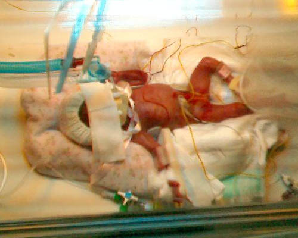

| The other tubes and wires are feeding
Poppy and monitoring her heart rate. She also has a line into which she
can receive antibiotics. She is currently being fed with a sugar solution
fed directly into her vein, as her stomach is not fully developed yet.
 |